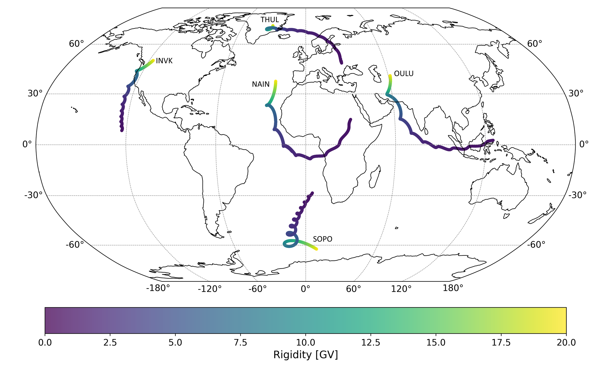

Cone

OTSO.cone
cone(
Stations: Union[str, Sequence[str]],
customlocations: Optional[list] = None,
solar_wind_params: SolarWindParams = {},
geomagnetic_params: GeomagneticParams = {},
tsyganenko_params: TsyganenkoParams = {},
datetime_params: DateTimeParams = {},
magfield_params: MagFieldParams = {},
integration_params: IntegrationParams = {},
particle_params: ParticleParams = {},
rigidity_params: RigidityParams = {},
coordinate_params: CoordinateParams = {},
computation_params: ComputationParams = {},
data_retrieval_params: DataRetrievalParams = {},
custom_field_params: CustomFieldParams = {},
transmission_params: TransmissionParams = {},
) -> list
Compute asymptotic viewing cones for given neutron monitor stations, or user-defined locations. Also computes cutoff rigidities. Transmission functions can be computed on request.
Upon calling this function, OTSO will perform particle tracing simulations based on the specified parameters, returning the asymptotic viewing cones, rigidities, and related metadata. Transmission functions will are computed only at the the request of the user.
Parameters:
-
Stations(str | list) –Station name(s) or identifiers used for cone calculations.
-
customlocations(list, default:None) –Custom locations as [["NAME", lat, lon]].
-
datetime_params(DateTimeParams, default:{}) –Date/time parameters.
Available keys:
year(int, default=2024): Year (e.g., 2023)month(int, default=1): Month (1–12)day(int, default=1): Day (1–31)hour(int, default=12): Hour (0–23)minute(int, default=0): Minute (0–59)second(int, default=0): Second (0–59)
-
magfield_params(MagFieldParams, default:{}) –Magnetic field models.
Available keys:
internalmag(str, default="IGRF"): "NONE", "IGRF", "Dipole", "Custom Gauss", "CHAOS"externalmag(str, default="TSY89c"): "NONE", "TSY87short", "TSY87long", "TSY89a", "TSY96", "TSY01", "TSY01S", "TSY04", "TSY89c", "TSY15N", "TSY15B", "TA16_RBF", "TSY89_refit", "MHD"boberg(bool, default=False): Enable Boberg extensionbobergtype(str, default="EXTENSION"): "EXTENSION", "CONTINUOUS", "DST_DEPENDENT", "DST_MIDPOINT"magnetopause(str, default="Kobel"): "NONE", "Kobel", "Sibeck", "Lin", "Sphere", "aFormisano"spheresize(float, default=25): Spherical boundary radius (Re)AdaptiveExternalModel(bool, default=False): Auto-select external model
-
rigidity_params(RigidityParams, default:{}) –Rigidity scanning.
Available keys:
startrigidity(float, default=20): Initial rigidity (GV)endrigidity(float, default=0): Final rigidity (GV)rigiditystep(float, default=0.01): Step size (GV)
-
transmission_params(TransmissionParams, default:{}) –Transmission function computation parameters
Available keys:
transmission(bool, default=False): Bool to enable or disable transmission computationtransmissionRstep(float, default=0.001): R ± transmissionRstep defines the transmission rigidity sampling rangetransmissionsamples(int, default=20): the number of sample rigidities to test within the sampling range
-
solar_wind_params(SolarWindParams, default:{}) –Solar wind parameters.
Available keys:
vx(float, default=-500): Solar wind velocity x-component (km/s)vy(float, default=0): Solar wind velocity y-component (km/s)vz(float, default=0): Solar wind velocity z-component (km/s)bx(float, default=0): IMF x-component (nT)by(float, default=5): IMF y-component (nT)bz(float, default=5): IMF z-component (nT)by_avg(float, default=0): Averaged IMF By over last 30mins (nT)bz_avg(float, default=0): Averaged IMF Bz over last 30mins (nT)density(float, default=1): Solar wind density (particles/cm³)pdyn(float, default=0): Solar wind dynamic pressure (nPa)
-
geomagnetic_params(GeomagneticParams, default:{}) –Geomagnetic indices.
Available keys:
Dst(float, default=0): Dst index (nT)kp(float, default=0): Kp index (0-9)n_index(float, default=0): Newell coupling functionb_index(float, default=0): Boynton coupling functionsym_h_corrected(float, default=0): Corrected SYM-H index (nT)
-
tsyganenko_params(TsyganenkoParams, default:{}) –Tsyganenko model coefficients.
Available keys:
G1(float, default=0): Tsyganenko G1 coefficientG2(float, default=0): Tsyganenko G2 coefficientG3(float, default=0): Tsyganenko G3 coefficientW1(float, default=0): Tsyganenko W1 coefficientW2(float, default=0): Tsyganenko W2 coefficientW3(float, default=0): Tsyganenko W3 coefficientW4(float, default=0): Tsyganenko W4 coefficientW5(float, default=0): Tsyganenko W5 coefficientW6(float, default=0): Tsyganenko W6 coefficient
-
integration_params(IntegrationParams, default:{}) –Integration settings.
Available keys:
intmodel(str, default="Boris-Buneman"): "4RK", "5RK", "6RK", "Vay", "HC", "Boris-Buneman"gyropercent(float, default=15): Gyration period percentageminaltitude(float, default=20): Minimum altitude (GDZ = km or other = Re)maxdistance(float, default=100): Maximum distance (Re)maxtime(float, default=0): Maximum timemintrapdist(float, default=0): Minimum trapping distancestartaltitude(float, default=20): Starting altitude (GDZ = km or other = Re)betaerror(float, default=0.001): Maximum allowed beta error for integration steps %totalbetacheck(bool, default=False): Enable cumulative beta check during integrationadaptivestep(bool, default=True): Enable adaptive time stepsmaxsteps(int, default=None): Maximum number of integration steps
-
particle_params(ParticleParams, default:{}) –Particle settings.
Available keys:
Anum(int, default=1): Atomic number (-1=muon, 0=electron, 1=proton, 2=alpha)anti(str, default="YES"): YES = anti-particle, NO = particlezenith(float, default=0): Zenith angle for Custom cutoff computationazimuth(float, default=0): Azimuth angle for Custom cutoff computation
-
coordinate_params(CoordinateParams, default:{}) –Coordinate systems.
Available keys:
coordsystem(str, default="GEO"): Output coordinate system; "GDZ", "GEO", "GSM", "GSE", "SM", "GEI", "MAG", "SPH", "RLL"inputcoord(str, default="GDZ"): Input coordinate system; "GDZ", "GEO", "GSM", "GSE", "SM", "GEI", "MAG", "SPH", "RLL"
-
computation_params(ComputationParams, default:{}) –Computation settings.
Available keys:
corenum(int, default=None): Number of CPU cores for multicore processingthreadnum(int, default=None): Number of threads per CPU core for Fortran computationsVerbose(bool, default=True): Enable verbose outputdelim(str, default=";"): Delimiter for asymptotic output formatting
-
data_retrieval_params(DataRetrievalParams, default:{}) –Data retrieval.
Available keys:
serverdata(str, default="OFF"): Server data retrieval from OMNIlivedata(str, default="OFF"): real-time data retrieval from NOAA
-
custom_field_params(CustomFieldParams, default:{}) –Custom fields.
Available keys:
g(list, default=None): Gauss g coefficientsh(list, default=None): Gauss h coefficientsmax_degree(int, default=13): Max degree of spherical harmonic expansionMHDfile(str, default=None): MHD simulation fileMHDcoordsys(str, default=None): MHD coordinate system
Returns:
-
list(list) –[cone_dataframe, cutoff_dataframe, readme_text]
- cone_dataframe: Asymptotic directions per rigidity (filter;lat;lon) if transmission is enabled the format is (filter;lat;lon;TF)
- cutoff_dataframe: Cutoff rigidity table (Ru, Rc, Rl, PTF)
- readme_text: OTSO computation summary
Examples:
from OTSO import cone
if __name__ == '__main__':
stations_list = ["OULU", "ROME"] # list of neutron monitor stations (using their abbreviations)
cone_results = cone(Stations=stations_list,
computation_params={"corenum": 1, "threadnum": 8},
datetime_params={"year": 2005, "month": 5, "day": 1, "hour": 0},
integration_params={"gyropercent": 1},
magfield_params={"internalmag": "IGRF", "externalmag": "TSY89c"},
rigidity_params={"rigiditystep":0.001},
transmission_params={"transmission": True, "transmissionRstep": 0.0001, "transmissionsamples": 20})
# Access the results
cone_df, cutoff_df, metadata = cone_result